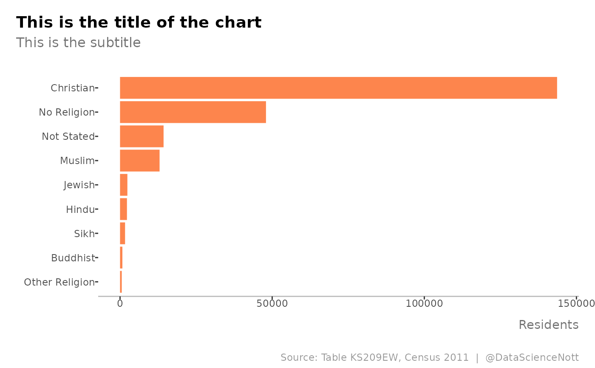

ds_theme.RdInspired from the chart layout used by TraffordDataLab https://github.com/traffordDataLab/assets/tree/master/theme/ggplot2
ds_theme()
A ggplot2 theme with extended details
Zoë Turner
2021-10-15
# load some data df <- data.frame( religion = c("Christian", "Buddhist", "Hindu", "Jewish", "Muslim", "Sikh", "Other Religion", "No Religion", "Not Stated"), count = c(143639, 768, 2271, 2413, 12994, 1652, 566, 47968, 14307) ) # create a ggplot object plot <- df %>% dplyr::arrange(count) %>% dplyr::mutate(religion = factor(religion, levels = religion)) %>% ggplot2::ggplot(ggplot2::aes(religion, count)) + ggplot2::geom_col(fill = "#fc6721", alpha = 0.8, show.legend = FALSE) + ggplot2::coord_flip() + ggplot2::labs(x = NULL, y = "Residents", title = "This is the title of the chart", subtitle = "This is the subtitle", caption = "Source: Table KS209EW, Census 2011 | @DataScienceNott") # style with the ds_theme putting y axis label and ticks back plot + nottshcMethods::ds_theme() 